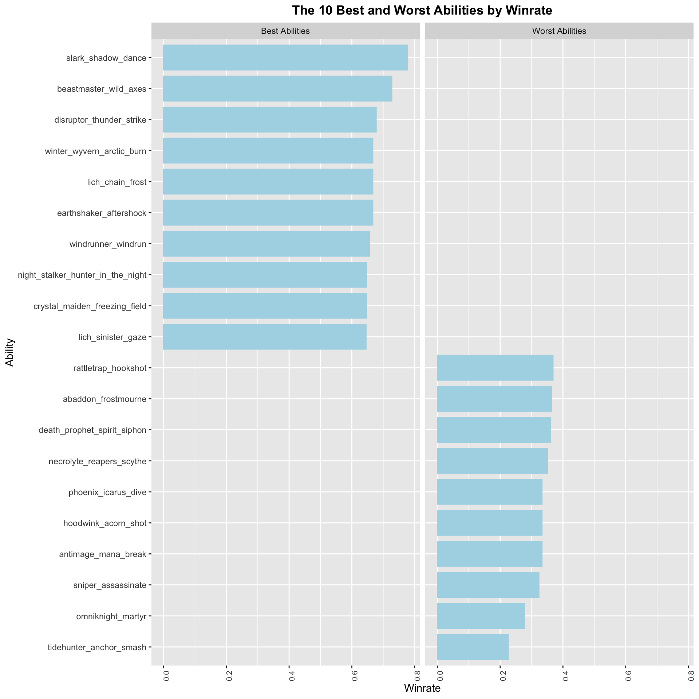
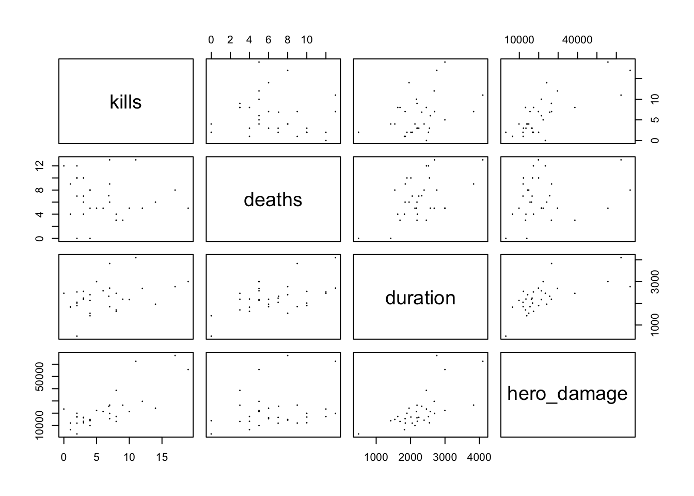

dfc =as.data.frame(table(dota2$ability))names(dfc)[1] ='ability'dfc <- dfc[dfc$Freq >29,]dota2 <- dota2[dota2$ability %in% dfc$ability,]wldf <- dota2[,c("win", "ability")]wldf <- wldf %>%filter(win ==1) %>%# Consider only the rows where the round was wongroup_by(ability) %>%summarise(wins =n())wldf <-merge(wldf, dfc, by ="ability", all.x =TRUE)wldf$winrate <- wldf$wins / wldf$Freqwldf <- wldf[order(-wldf$winrate),]wlends <-rbind(head(wldf, 10), tail(wldf, 10))wlends <- wlends %>%mutate(new_col =ifelse(row_number() <=10, "Best Abilities", ifelse(row_number() >n() -10, "Worst Abilities", NA)))ggplot(wlends, aes(x=reorder(ability,winrate),y=winrate))+geom_col(color='lightblue', fill ='lightblue', width=0.8)+facet_wrap(~new_col)+labs(title="The 10 Best and Worst Abilities by Winrate", x="Ability", y ="Winrate")+theme(axis.text.x =element_text(angle =90, size =8),plot.title =element_text(color ="black", face ="bold", hjust =0.5) ) +coord_flip()

There are over 500 abilities in total, which is an extremely large pool. In order to answer the research questions, we need to select the abilities we would like to analyze. Before we discover which abilities are good or bad, we should make sure that we are working with a good sample size. To accomplish this, we will only consider abilities that appear in at least 30 matches. Then, we can calculate the total number of wins associated with each ability and determine the win rate by dividing by frequency. The results are plotted above. We can see Slark’s “Shadow Dance” topping the chart with a 77.78% winrate, while Tidehunter’s “Anchor Smash” is at 22.58% on the bottom.
Code
dfh =as.data.frame(table(dota2$hero))names(dfh)[1] ='hero'wlhdf <- dota2[,c("win", "hero")]wlhdf <- wlhdf %>%filter(win ==1) %>%# Consider only the rows where the round was wongroup_by(hero) %>%summarise(wins =n())wlhdf <-merge(wlhdf, dfh, by ="hero", all.x =TRUE)wlhdf$winrate <- wlhdf$wins / wlhdf$Freqwlhdf <- wlhdf[order(-wlhdf$winrate),]wlhends <-rbind(head(wlhdf, 10), tail(wlhdf, 10))wlhends <- wlhends %>%mutate(new_col =ifelse(row_number() <=10, "Best Heroes", ifelse(row_number() >n() -10, "Worst Heroes", NA)))ggplot(wlhends, aes(x=reorder(hero,winrate),y=winrate))+geom_col(color='pink', fill ='pink', width=0.8)+facet_wrap(~new_col)+labs(title="The 10 Best and 10 Worst Heroes by Winrate", x="Ability", y ="Winrate")+theme(axis.text.x =element_text(angle =90, size =8),plot.title =element_text(color ="black", face ="bold", hjust =0.5) ) +coord_flip()
This is the barplots of 10 best heroes and 10 worst heroes selected from the original dataset based on their win rates. From this graph, we can see for what heroes tend to have higher win rate, which will also affect the effectiveness of the abilities chosen which will be further analyzed below. From the plots we can see the top heroes such as Mars and Bane have almost win rate of 0.8 which is really high.
3.2 Which abilities have the highest kills, gold, experiences points, and kda, and are therefore the most valuable?
To answer the question, we decide to draw parallel coordinate plots which is useful when we want to get the abilities that top the charts in all four indicators. It’s important to note that kda is a statistic that is used to measure a player’s performance.
This is the parallel coordinate plot colored by abilities so that we can see the trend of lines of different colors. In general, the data values are compact with only one line colored pink with extremely high value of kda that belongs to the ability “slark_shadow_dance”(might be outlier).
This is the interactive parallel coordinate plot for all 10 abilities. We make it interactive such that we can move axis around and we can filter for particular section which easier to see the top abilities. However, since the dataset is too large, the lines overlap, so we need to select specific region to interpret the plot.
From the interactive parallel coordinate plot, I select a specific region where these abilities have relatively high values across all four variables, kills, gold, experiences points earned, and kda, and I filter the dataset based on that.
In total, I select 4 top abilities through these parallel coordinate plots, which are the following:
1. omniknight_martyr
2. winter_wyvern_arctic_burn
3. slark_shadow_dance
4. necrolyte_reapers_scythe
3.3 Do these four good abilities function better on radiant or dire?
To answer the question, we decide to draw mosaic plot here because it can incorporate group size into account and can clearly show the relationship between multiple categorical variables, which are win (1 is win and 0 is lose), isRadient(True is radient and False is dire), and ability in our case.
In this mosaic plot, label ‘n’ represents the ability “necrolyte_reapers_scythe”; ‘o’ represents the ability “omniknight_martyr”; ‘s’ represents the ability “slark_shadow_dance”; ‘w’ represents the ability “winter_wyvern_arctic_burn”. These abbreviations make the plot clearer to read by avoiding label overlaps.
From the above mosaic plot, we can see for the three abilities “omniknight_martyr”, “slark_shadow_dance”, and “winter_wyvern_arctic_burn”, they perform significantly better on radiant, while for the ability “necrolyte_reapers_scythe”, it performs better on dire (not radiant). In our case, these four abilities function much better on radiant.
3.4 What heroes are most commonly associated with the four good abilities?
This question can be answered by drawing the separate barplots for each ability. When people are assigned hero, these heroes are designed with a specific role in mind, so they have tendence to select correlated abilities. From the barplots we can know what heroes are highly correlated to the selection of each ability among all four.
Code
df_n <- df_2[df_2$ability =="n",] df_n =as.data.frame(table(df_n$hero))names(df_n)[1] ='hero'df_n$rank =rank(df_n$Freq)df_n <- df_n[order(df_n$rank,decreasing=TRUE),]a =ggplot(df_n, aes(x=reorder(hero,-Freq),y=Freq))+geom_col(color='pink', fill ='lightpink', width=0.8)+labs(title="Count of Hero Associated with 'n'",x="hero", y ="Count")+theme(axis.text.x =element_text(angle =90, hjust=1, size =8)) df_s <- df_2[df_2$ability =="s",] df_s =as.data.frame(table(df_s$hero))names(df_s)[1] ='hero'df_s$rank =rank(df_s$Freq)df_s <- df_s[order(df_s$rank,decreasing=TRUE),]b =ggplot(df_s, aes(x=reorder(hero,-Freq),y=Freq))+geom_col(color='pink', fill ='lightpink', width=0.8)+labs(title="Count of Hero Associated with 's'",x="hero", y ="Count")+theme(axis.text.x =element_text(angle =90, hjust=1, size =8)) df_o <- df_2[df_2$ability =="o",] df_o =as.data.frame(table(df_o$hero))names(df_o)[1] ='hero'df_o$rank =rank(df_o$Freq)df_o <- df_o[order(df_o$rank,decreasing=TRUE),]c =ggplot(df_o, aes(x=reorder(hero,-Freq),y=Freq))+geom_col(color='pink', fill ='lightpink', width=0.8)+labs(title="Count of Hero Associated with 'o'",x="hero", y ="Count")+theme(axis.text.x =element_text(angle =90, hjust=1, size =8)) df_w <- df_2[df_2$ability =="w",] df_w =as.data.frame(table(df_w$hero))names(df_w)[1] ='hero'df_w$rank =rank(df_w$Freq)df_w <- df_w[order(df_w$rank,decreasing=TRUE),]d =ggplot(df_w, aes(x=reorder(hero,-Freq),y=Freq))+geom_col(color='pink', fill ='lightpink', width=0.8)+labs(title="Count of Hero Associated with 'w'",x="hero", y ="Count")+theme(axis.text.x =element_text(angle =90, hjust=1, size =8))
From above barplots, we can see the heroes Lifeastealer and Nechrophos tends to be highly associated with the ability “necrolyte_reapers_scythe”; the hero Slark is highest correlated to the ability “slark_shadow_dance”; the hero Omniknight is highest correlated to the ability “omniknight_martyr”; the hero Winter Wyvern is highest correlated to the ability “winter_wyvern_arctic_burn”. When people are randomly assigned these heroes, they are more likely to also select these four good abilities with a significant frequency difference compared to other heroes.
3.5 How many resources are consumed by these four abilities compared to the the other abilities?
We want to draw histograms of continuous variable net worth faceted by all 10 abilities to see the distribution of net resources of each player possessing good abilities compared to rest of the abilities. In other words, this information gives us the total cost of choosing the four good abilities selected.
Code
saved_for_fourth[saved_for_fourth =="omniknight_martyr"] <-'o'saved_for_fourth[saved_for_fourth =="slark_shadow_dance"] <-'s'saved_for_fourth[saved_for_fourth =="winter_wyvern_arctic_burn"] <-'w'saved_for_fourth[saved_for_fourth =="necrolyte_reapers_scythe"] <-'n'ggplot(saved_for_fourth, aes(net_worth))+geom_histogram(color ='cornflowerblue', fill ='lightblue', bins=15)+facet_wrap(~ability)+labs("Faceted Histogram of Net Worth")+theme_grey(9)

From these histograms, we can see that the abilities “necrolyte_reapers_scythe” and “slark_shadow_dance” use relatively limited amount of resources, while the abilities “omniknight_martyr” and “winter_wyvern_arctic_burn” use relatively large amount of resources, meaning that there’s higher cost selecting these abilities.
3.6 Is there any inner correlation between the continuous variables we’ve studied above?
We want to study inner correlation between eair pair of continuous variables by using the scatterplot matrix which is useful to show all correlations at once. We use the original dataset instead of the modified one above to avoid any issue of bias.
We can see that most of these variables are pairwise positive linearly correlated except for “kda” related graphs. Multicollinearity can lead to less stable models, making predictions sensitive to changes in the dataset, which might be one of the limitation of our research. However, this also confirms with the parallel coordinate plot we drew above that kda can take widespread range of values disregarding other variables presented in the third row and third column in the scatterplot matrix.